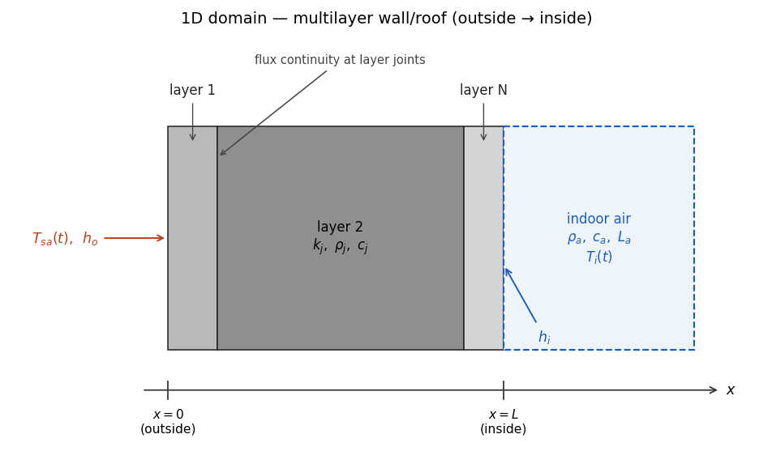

1D model: homogeneous multilayer systems
EnerHabitat evaluates the thermal performance of a single opaque component of the building envelope — a wall or a roof. It considers that the only heat path into the indoor space is through the component under evaluation: there are no windows, no ventilation, no infiltration and no internal heat gains (Barrios et al. 2016). This makes results directly comparable across constructive systems: whatever difference appears in the indoor temperature or in the energy demand is caused by the constructive system alone.
The simulation runs over the average day of a chosen month, built from the EPW weather file (see The average day), and is iterated day after day until the solution becomes periodic — the daily cycle repeats itself. All reported results correspond to that converged, periodic day.
Domain and assumptions
The constructive system is a stack of \(N\) homogeneous layers, ordered from outside (\(x = 0\)) to inside (\(x = L\)). Each layer \(j\) is described by three constant properties: thermal conductivity \(k_j\) (W/(m·K)), density \(\rho_j\) (kg/m³) and specific heat \(c_j\) (J/(kg·K)).

The model assumes:
- 1D conduction perpendicular to the surface (the \(x\) direction); layers are homogeneous, so there is no in-plane heat flow.
- Constant thermal properties per layer (no temperature dependence, no moisture).
- Convective boundary conditions with fixed film coefficients \(h_o\) (outdoor) and \(h_i\) (indoor). The defaults, \(h_o = 13\) and \(h_i = 8.1\) W/(m²·K), are the values prescribed by the Mexican standards NOM-008-ENER-2001 (Appendix B) and NOM-020-ENER-2011 (Secretaría de Energía (México) 2001, 2011) (\(h_i = 8.1\) is the vertical-surface value, applied here to all orientations); both are configurable.
- Solar and long-wave radiation on the outdoor surface enter through the sun–air temperature (Equation 4).
- The indoor space is a lumped air node of depth \(L_a\) (2.5 m by default) in the free-running mode, or a fixed setpoint in the air-conditioned mode.
The canonical list of assumptions, with the consequence each one has for interpreting the results, is in Assumptions and limits.
Governing equations
Within each layer \(j\) the temperature field obeys the one-dimensional, time-dependent heat conduction equation (Incropera et al. 2007):
\[ \rho_j\, c_j\, \frac{\partial T_j}{\partial t} \;=\; k_j\, \frac{\partial^2 T_j}{\partial x^2}, \qquad j = 1, \dots, N, \tag{1}\]
where \(t\) is time and \(x\) the coordinate perpendicular to the surface. At the joint between consecutive layers the temperature is continuous and the conductive flux is conserved:
\[ k_j \left.\frac{\partial T}{\partial x}\right|_{j,\,j+1} \;=\; k_{j+1} \left.\frac{\partial T}{\partial x}\right|_{j,\,j+1}. \tag{2}\]
Boundary conditions and solution modes
Outdoor: the sun–air temperature
At the outdoor surface, \(x = 0\), convection against the sun–air temperature \(T_{sa}\) balances the conducted flux:
\[ h_o \left( T_{sa} - T_{x=0} \right) \;=\; -\,k_1 \left.\frac{\partial T_1}{\partial x}\right|_{x=0}. \tag{3}\]
\(T_{sa}\) is a fictitious temperature that lumps together the three thermal loads on the exterior surface — convection with outdoor air, absorbed short-wave solar radiation, and the long-wave radiative exchange with the sky (Mackey and Wright 1944; ASHRAE 1997):
\[ T_{sa} \;=\; T_a \;+\; \frac{a\, I_s}{h_o} \;-\; RF, \tag{4}\]
where:
- \(T_a\) — outdoor air temperature of the average day;
- \(I_s\) — solar irradiance on the (tilted, oriented) surface, W/m²;
- \(a\) — solar absorptance of the outdoor surface (intuitively, the color of the wall/roof — though coatings of the same visible color can have quite different solar absorptance, e.g. cool-roof paints);
- \(h_o\) — outdoor film coefficient;
- \(RF\) — long-wave radiation factor, decreasing linearly with the surface tilt \(\beta\): \(RF = 3.9\,(1 - \beta/90°)\) °C for \(0° \le \beta \le 90°\) (3.9 °C for a horizontal roof facing the cold sky, 0 for a vertical wall) and 0 beyond — the same rule as the 2016 online tool (Barrios et al. 2016). The 3.9 °C (7 °F) horizontal value is the classical \(\varepsilon \Delta R / h_o\) long-wave correction of the sol–air method (ASHRAE 1997), whose concept goes back to Mackey & Wright (1944). It is an empirical correction, not an explicit sky/surroundings radiative balance.
\(I_s\) is computed with pvlib’s get_total_irradiance (Holmgren et al. 2018) from the average-day DNI (\(I_b\)), DHI (\(I_d\)) and GHI (\(I_g\)) and the solar position at the site, for the surface tilt and azimuth, using the isotropic-sky transposition model and ground albedo 0.25 (the pvlib defaults); \(I_s\) (poa_global) includes the beam, sky-diffuse and ground-reflected components. This is why Tsa() is recomputed — automatically, on the next call — whenever the absorptance, the orientation, the month or the location change.
Indoor boundary condition
At the indoor surface, \(x = L\), the conducted flux is released by convection to the indoor air at temperature \(T_i\):
\[ -\,k_N \left.\frac{\partial T_N}{\partial x}\right|_{x=L} \;=\; h_i \left( T_{x=L} - T_i \right). \tag{5}\]
What happens to \(T_i\) defines the two solution modes.
Free-running mode — solve()
The indoor air is a lumped thermal mass — density \(\rho_a\), specific heat \(c_a\), depth \(L_a\) — whose temperature evolves with the heat received from the indoor surface:
\[ L_a\, \rho_a\, c_a\, \frac{dT_i}{dt} \;=\; h_i \left( T_{x=L} - T_i \right), \tag{6}\]
with \(L_a = 2.5\) m by default (config.La). The air properties are \(\rho_a \approx 1.18\) kg/m³ and \(c_a \approx 1005\) J/(kg·K) (config.AIR_DENSITY, config.AIR_HEAT_CAPACITY). Because Equation 6 is integrated in time alongside the wall, the time step is constrained by this coupling — see the numerical method for why config.dt is fixed at 10 s.
The reported energy_transfer is the heat delivered by the indoor surface to the air, accumulated over the converged day:
\[ E \;=\; \int_{24\,\mathrm{h}} h_i \left( T_{x=L} - T_i \right)^{+} dt \qquad \left[\mathrm{J/(m^2\,day)}\right], \tag{7}\]
where \((\,\cdot\,)^{+}\) keeps the positive part (heat entering the room). In the periodic regime the daily energy entering equals the energy leaving, so either one represents the transfer through the system.
Air-conditioned mode — solveAC()
The indoor air temperature is held constant at the neutrality temperature of the adaptive comfort model of Humphreys & Nicol (2000):
\[ T_i \;=\; T_n \;=\; 0.54\, \overline{T_a} \;+\; 13.5\ °\mathrm{C}, \tag{8}\]
where \(\overline{T_a}\) is the mean outdoor air temperature of the average day. The cooling and heating demands are the fluxes the air-conditioning system must remove or supply to keep \(T_i = T_n\):
\[ E_c \;=\; \int_{24\,\mathrm{h}} h_i \left( T_{x=L} - T_n \right)^{+} dt, \qquad E_h \;=\; \int_{24\,\mathrm{h}} h_i \left( T_n - T_{x=L} \right)^{+} dt, \tag{9}\]
reported as cooling_energy and heating_energy in J/(m²·day).
The average-day DataFrame also carries DeltaTn, the half-width of the comfort zone around \(T_n\) as a function of the daily outdoor temperature swing, following the bioclimatic proposal of Morillón (Morillón-Gálvez et al. 2004) (from ±1.25 °C for swings below 13 °C up to ±3.5 °C for swings above 52 °C). It is provided as data for comfort analyses — e.g. checking how long the free-running \(T_i\) stays inside \(T_n \pm \Delta T_n\) — but solveAC() holds the setpoint at \(T_n\) itself.
The average day
The climate forcing is built from the EPW file for the selected month (Location.meanDay(month, year)), at 1-second resolution:
- Outdoor temperature \(T_a\) — the monthly means of the daily minimum and maximum, \(T_{min}\) and \(T_{max}\), are interpolated with the cosine model of Chow & Levermore (2007): the minimum is assumed at sunrise and the maximum at the month’s mean time of daily maximum, both extracted from the EPW.
- Irradiances — the month’s hour-by-hour means of the EPW solar fields: \(I_g\) = global horizontal irradiance (GHI), \(I_b\) = direct normal irradiance (DNI) and \(I_d\) = diffuse horizontal irradiance (DHI), linearly interpolated in time to the simulation grid. (The EPW records each value as the energy accumulated over the preceding hour (U.S. Department of Energy 2022); the hourly means are treated as mean-power samples, in W/m², placed on the hour.)
- Solar position and sunrise — computed with pvlib for the site’s latitude, longitude, altitude and timezone (read from the EPW header).
- Comfort quantities — \(T_n\) (Equation 8) and
DeltaTn(constant columns).
Tsa() then evaluates Equation 4 on this average day for the system’s tilt, azimuth and absortance, and returns it on the same time grid used by the solvers.
Outputs and units
| Result | Mode | Meaning | Units |
|---|---|---|---|
Ti (pandas.Series) |
both | Indoor air temperature over the converged day | °C |
energy_transfer |
solve() |
Energy delivered to the indoor air (Equation 7) | J/(m²·day) |
cooling_energy |
solveAC() |
Cooling demand to hold \(T_n\) (Equation 9) | J/(m²·day) |
heating_energy |
solveAC() |
Heating demand to hold \(T_n\) (Equation 9) | J/(m²·day) |
Energies are per unit of component surface area, accumulated over one day: divide by \(3600\) for Wh/(m²·day) or by \(3.6\times10^6\) for kWh/(m²·day).